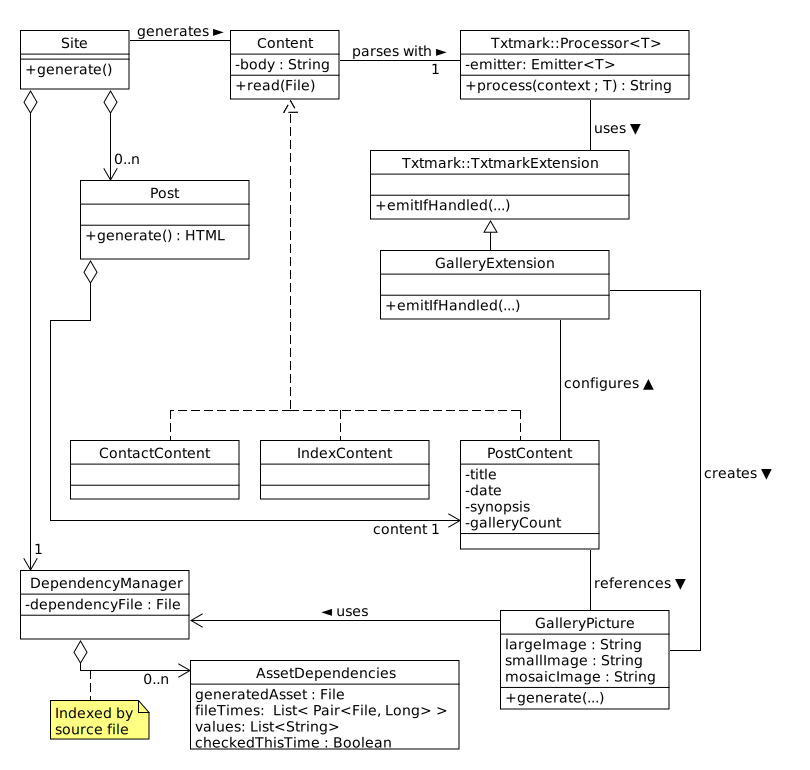

Here's a quick sketch of some of the top-level classes in Corpsblog:
One of the things I was experimenting with when I first wrote
this was using Kotlin's
Type-Safe
Builder pattern. It works OK, though at the time (with Kotlin 1.0)
the lack of the
@DslMarker tag
caused a nasty surprise, when a builder function from an outer scope
was invoked. I added startInitAssert() and
endInitAssert() to TagParent to detect that.
@DslMarker is a better solution, but I left the assertions
in there anyway, since they don't hurt anything.
The builder pattern works, but it does really force you through a bit of a labyrinth of method-with-receiver to figure out what's going on. That's OK, really - it's an extremely useful part of the language, and doing the builder patter forces one to master it.
The builder I have here is incomplete, in that I didn't try to encode strict HTML validity rules into the type declarations. For example, I let body tags to be embedded inside just about any other body tag, which is of course invalid. To actually get this right, and to give a stronger guarantee of valid HTML5 in other ways would be a pretty big, detail-oriented project. In essence, one would have to build a proactive HTML5 validator, at least for the HTML5 subset of interest. Were I making a production system for wide deployment, that would be worth some effort, but for this experiment/prototype, I decided not to do this.
Here's a sketch of the HTML builder classes. Many of these
classes are very small; they're in Html.kt.
Sample output is available here. It
is generated from the test directory.